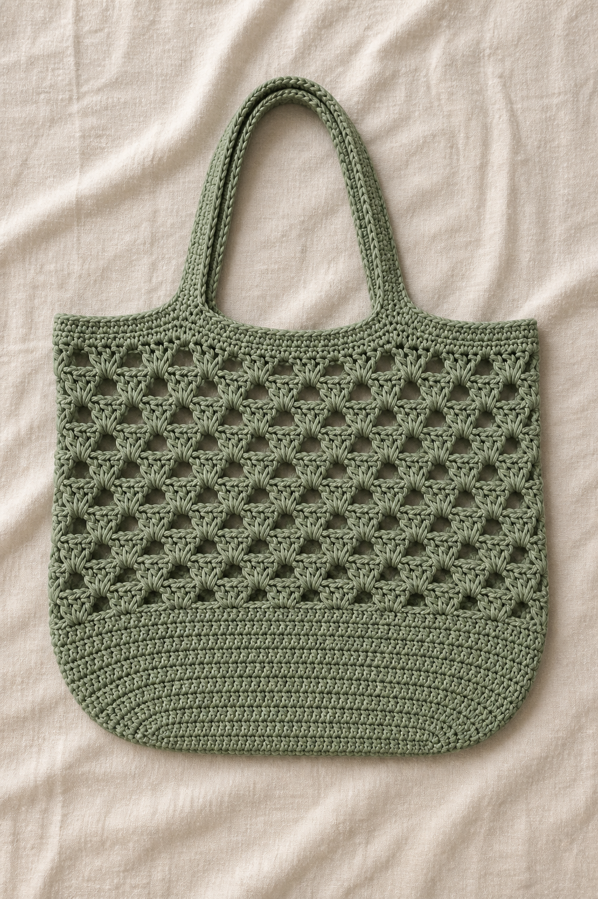
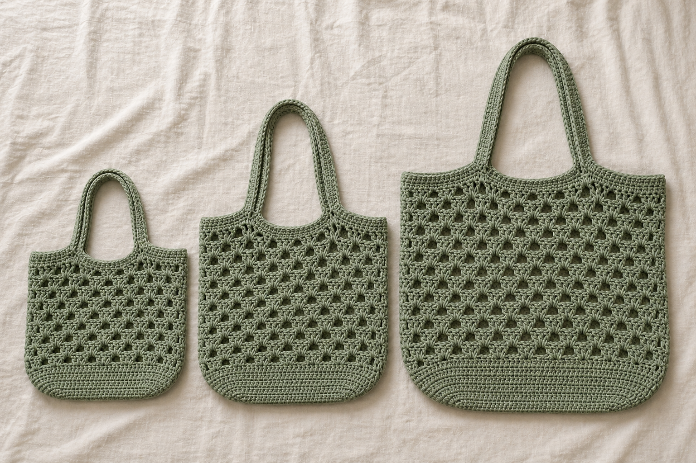
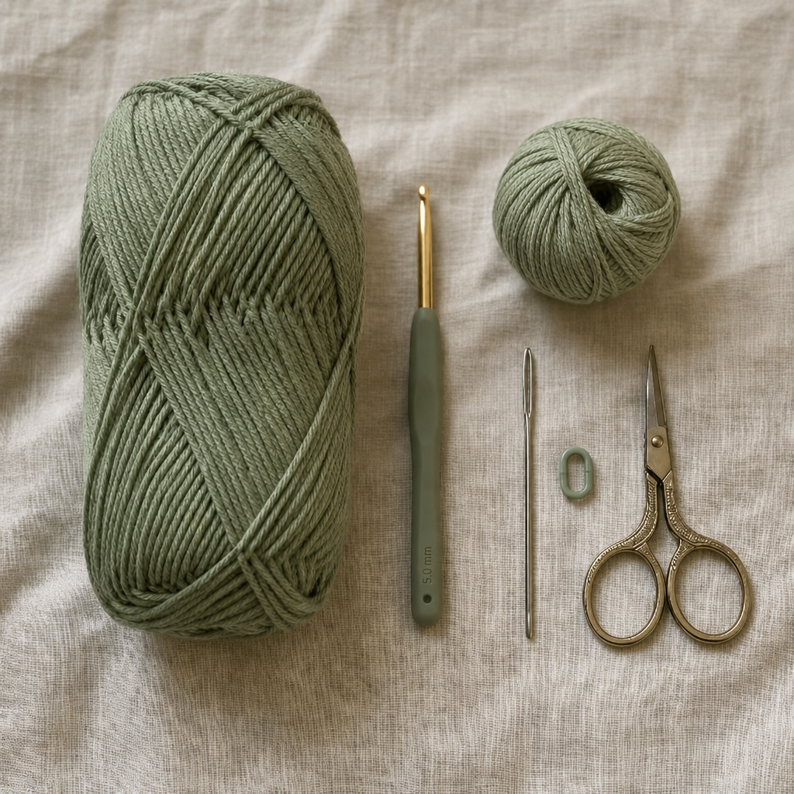
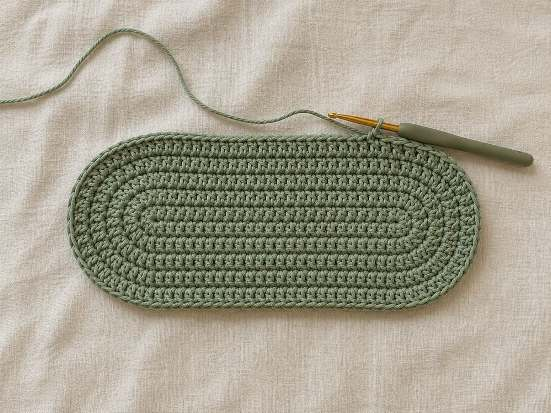
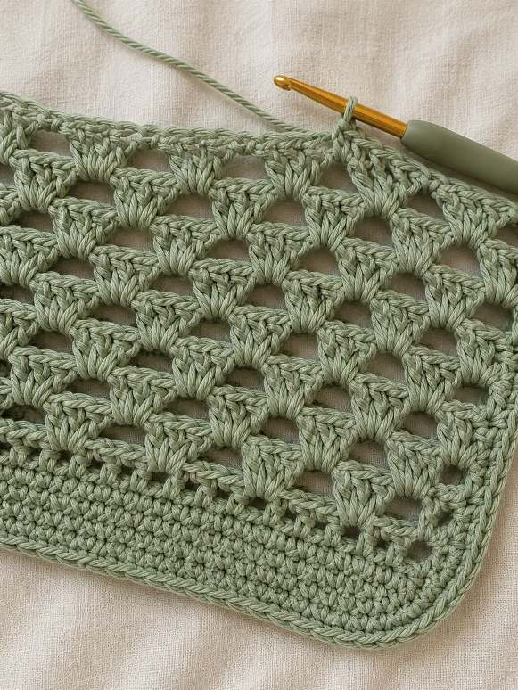
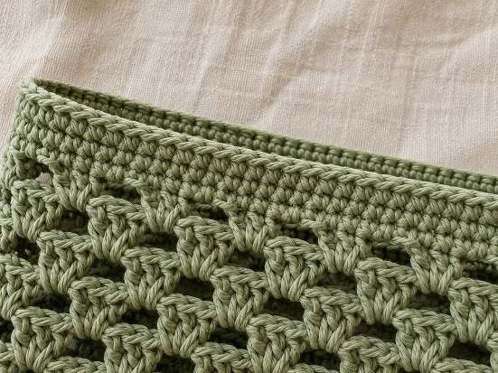
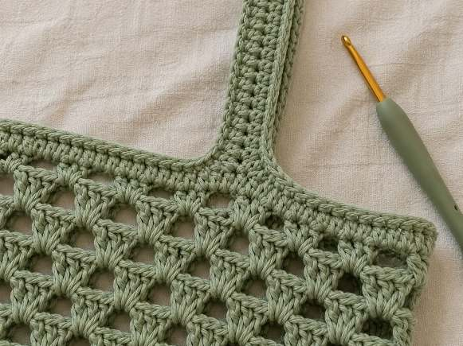
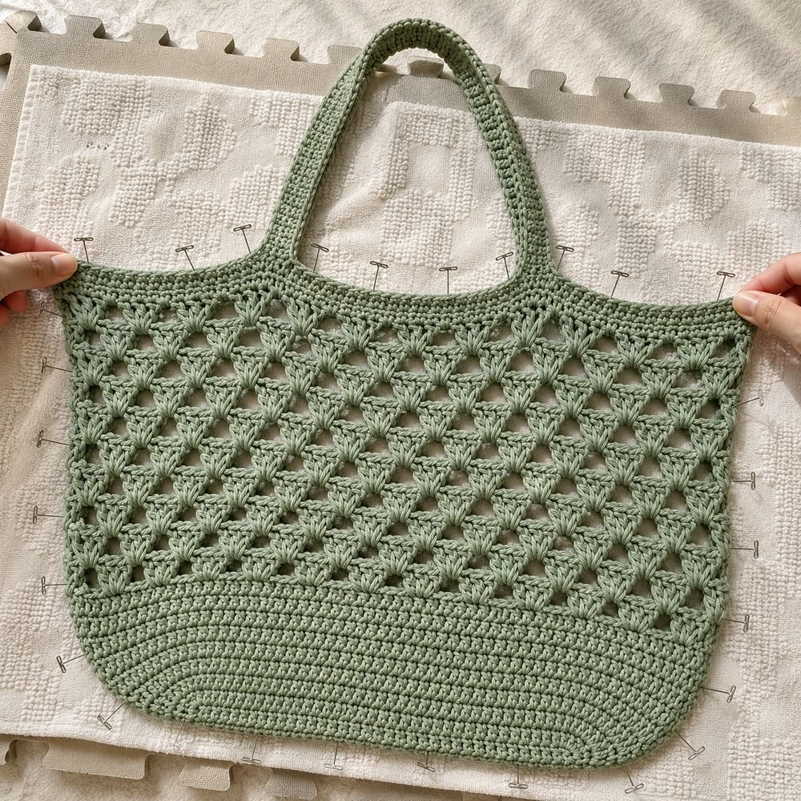

A modern, boutique-style market bag with a beautiful shell-inspired open mesh, a sturdy rounded rectangular base, thick comfy straps, and a decorative reinforced edge — worked seamlessly from the bottom up, with no sewing required. Comes in three sizes and three modern colourways.

This tote is worked in one continuous piece, from the base upward — no separate pieces, no sewing at all. The body uses just one easy, repeating 2-round stitch pattern that combines an open mesh with soft shell arches, so once you've worked it a couple of times, your hands will know it by heart.
Only chain, single crochet, half double crochet, and double crochet are used — no complicated shaping, no colour changes mid-round, and no sewing. If you can chain and single crochet confidently, you can make this bag.
This pattern gives instructions for Small, Medium, and Large all at once, written like this: Small (Medium, Large). Find your size once at the start of each round, then just follow that one number all the way through. It's simpler than it looks! ♡
Comfortable with chain, single crochet, half double crochet, double crochet, working in joined rounds, and simple repeats. Every round tells you exactly what to do next.
Gauge is not critical for this bag — a slightly bigger or smaller tote is still a lovely, useful tote. What matters most is a fabric tight enough to hold its shape: if the mesh looks floppy after a few rounds, go down a hook size.
All three sizes use the exact same stitches and the exact same construction — only the starting numbers and repeat counts change.
| Small | Medium | Large | |
|---|---|---|---|
| Base (L × W) | 21 × 11 cm | 26 × 13 cm | 31 × 16 cm |
| Body height (approx.) | 24 cm | 30 cm | 36 cm |
| Body repeats | 6 | 8 | 10 |
| Strap rise above rim (approx.) | 12 cm | 13 cm | 14 cm |
| Best for | Library, lunch, everyday errands | Farmers market, beach, everyday carry | Grocery shopping, travel, beach days |
Every measurement above is a friendly guide, not a strict rule. Want a taller bag in any size? Simply work extra Body repeats (Section 2) until it's the height you love, then move on to the Top Edge. Prefer longer handles? Add extra strap chains in steps of 4.

One full Body repeat (2 rounds) measures approx. 4 cm tall. 2 shells + 2 mesh sc measure approx. 11 cm wide, after light blocking. Exact gauge is not essential — see Helpful Notes on the previous page.
the whole bag — body, edge and straps — in one soft sage green
one warm, earthy terracotta from base to straps
one calm dusty blue from base to straps
Prefer a two-tone look? Simply switch to a contrast shade (cream, oatmeal, ivory…) for the top edge and straps — the bag pictured throughout this pattern keeps everything in one solid colour.

A firm, flat oval-rectangle worked in joined rounds, with increases only at the two curved short ends — the long sides stay perfectly straight.
| Start | Ch 24 (30, 36). | S / M / L |
| Rnd 1 | 3 sc in 2nd ch from hook, sc 21 (27, 33), 3 sc in last ch, sc 21 (27, 33) back along the other side. Join with a sl st. | 48 (60, 72) |
| Rnd 2 | Ch 1. Inc in each of the next 3 sts, sc 21 (27, 33), inc in each of the next 3 sts, sc 21 (27, 33). Join. | 54 (66, 78) |
| Rnd 3 | Ch 1. *Sc 1, inc* 3 times, sc 21 (27, 33), *sc 1, inc* 3 times, sc 21 (27, 33). Join. | 60 (72, 84) |
| Rnd 4 | Ch 1. *Sc 2, inc* 3 times, sc 21 (27, 33), *sc 2, inc* 3 times, sc 21 (27, 33). Join. | 66 (78, 90) |
| Rnd 5 | Ch 1. Sc in BLO of each st around. Join. (This crisp line is what turns the flat base upward into the walls.) | 66 (78, 90) |
| Rnd 6–7 | Ch 1. Sc in each st around — 2 rounds. Join each round. | 66 (78, 90) |
Every increase round adds exactly 6 stitches in total (3 at each rounded end) — if your count is off by anything other than a multiple of 6, you've likely increased along a straight side by mistake. Uncurl and recheck before continuing.

Just two rounds, repeated again and again — an airy mesh round, then a round of soft shell arches sitting inside it. This one combination is the whole body of the bag.
| Rnd AMESH | Ch 1. *Sc in next st, ch 3, skip 2 sts* — repeat all the way around. Join with a sl st to the first sc. | 22 (26, 30) ch-3 sps |
| Rnd BSHELL | Sl st into the first ch-3 sp. Ch 1. *Sc in next ch-3 sp, (2 dc, ch 1, 3 dc) all in the next ch-3 sp* — repeat around. Join with a sl st to the first sc. (That 5-dc-plus-ch-1 group is your shell.) | 11 (13, 15) shells |
Because this stitch mixes chains, sc, and dc, don't try to count a single "total stitch number." Instead, just check that you have one shell alternating with one sc, all the way around, with no partial shell at the join — that's your real stitch-count check for this pattern.
Repeat — Work Rnd A + Rnd B together as one repeat. Work a total of 6 (8, 10) repeats for the height shown on the size chart, or keep going for a taller bag.
A plain fishnet bag is just chains and sc. Here, the dc shells sitting inside the open mesh catch the light and give a soft, scalloped texture — that's the detail that makes this a modern boutique-style tote instead of a traditional string market bag.

A firmer band of hdc closes up the open mesh at the top, giving the bag's opening structure and something sturdy for the straps to grow from.
| Rnd 1 | Your last Rnd B already ends with exactly 66 (78, 90) solid sc + dc stitches around the shells — no extra mesh round is needed first. Ch 2 (counts as first hdc). Hdc in each of these sts around (that's every sc and every dc from Rnd B). Leave each shell's small centre ch-1 space alone — it stays open as a delicate detail peeking through the reinforced band. Join with a sl st to the top of the ch 2. | 66 (78, 90) |
| Rnd 2 | Ch 2. Hdc in each st around. Join. | 66 (78, 90) |
| Rnd 3 | Ch 1. Sc in each st around, for a clean, firm finished lip. Join. Do not fasten off — you'll use this same round to begin the straps. | 66 (78, 90) |
Hdc rounds are naturally denser than sc — that density is exactly what stops the bag opening from stretching out of shape once it's loaded with groceries or books.
Rnd 1–2 — hdc rounds, firm and dense
shell centres — stay open beneath, peeking through
Rnd 3 — one clean sc round finishes the lip

Instead of two separate pieces to sew on, both straps grow directly out of the top edge — chained up, reinforced, and crocheted straight back into the rim, exactly as pictured.
| Position | Working from your last join, ch 1 and sc in each of the first 11 (13, 15) sts of the round — this brings you to where the first strap begins on the front panel. | |
| Strap 1 | Ch 36 (40, 44) for the strap. Making sure the chain isn't twisted, count forward along the next 10 (12, 14) rim sts and sl st into the last of them. The strap now arches over those stitches, anchored at both ends — just like the handles in the photos. | 36 (40, 44) ch |
| Reinforce | Turn. Work hdc in each ch back along the strap. Sl st into the rim st where the chain began (right beside your last sc), closing the reinforced arch firmly. No floppy handles — this second pass gives the strap its thickness. | 36 (40, 44) hdc |
| Under the arch | Ch 1. Sc in each of the 10 (12, 14) rim sts beneath the strap — they are still unworked; the strap simply arches on top of them. Do not skip any rim stitches — every single one gets worked, and the round stays continuous. | |
| Continue | Sc in each of the next 23 (27, 31) rim sts — this carries you around the side and to the matching strap position, exactly opposite, on the back panel. | |
| Strap 2 | Repeat the Strap 1, Reinforce and Under the arch steps exactly, to build the second strap on the back panel. | 36 (40, 44) hdc |
| Finish | Sc in the remaining 12 (14, 16) rim sts to complete the round. Join with a sl st. Fasten off and weave in the end. |
It's easy to forget the rim stitches sitting beneath a strap, out of habit from other patterns. Remember: the strap arches on top of the rim — after reinforcing it, go back and sc into every stitch beneath the arch before carrying on. Count check: 11 + 10 + 23 + 10 + 12 = 66 sts for Small — every rim stitch worked, nothing skipped. ✓
Because the straps are reinforced with a second pass of hdc, they hold their shape and width beautifully — no floppy handles, and genuinely nothing to sew.

Cotton doesn't "block" the same way wool does (it won't hold a dramatically different shape), but a gentle soak and flat dry still relaxes the stitches beautifully and makes the shell mesh sit open and even — that's how the pictured bag gets its crisp, open look.
| Step 1 | Soak the finished bag in cool water with a splash of gentle wool or cotton wash for about 15 minutes. |
| Step 2 | Gently squeeze out excess water (never wring or twist), then roll the bag in a clean towel and press to remove more moisture. |
| Step 3 | Lay the bag flat on a blocking mat or towel and pin it out to shape. Gently open out each shell and mesh space with your fingers, and shape the base and straps into place. |
| Step 4 | Leave to air dry fully before use — this is what sets the drape and really opens up the shell mesh pattern. |
| Step 1 | Weave in every remaining yarn end through several nearby stitches on the inside of the bag, then trim close. |
| Step 2 | Check both straps sit at even lengths and the same twist — gently steam if one needs coaxing into place. |
| Step 3 | If you chose a two-tone version, double check every join is tucked to the inside where it won't show. |
| Step 4 | Give the finished bag a final light press or steam, and it's ready for the market, the beach, or the library. |

If you'd like to see any of these techniques worked in real time, add your own tutorial links here for buyers who prefer to watch and follow along.
Linking 2–3 short technique clips (even generic ones from your own channel or trusted creators) is one of the easiest ways to reduce buyer questions and support requests.
Print this page and tick off each stage as you go.
Thank you so much for choosing this pattern and for supporting a small handmade shop. It truly means the world to me, and I hope you love carrying your new tote everywhere. ♡
If you enjoyed this pattern, would you consider leaving a review? Every review genuinely makes my day and helps my little shop grow. Tag me in your makes so I can see and share your beautiful work, and follow along for new patterns. ♡